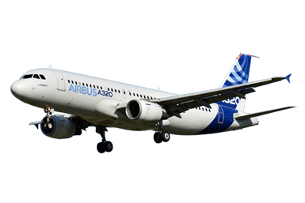
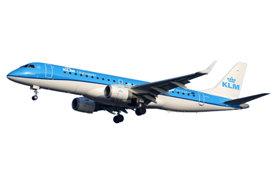
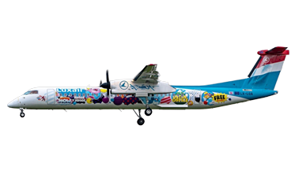

Type
Dans cette page, je vais vous montrer quelques types d’avions les plus célèbres.

A320 est un avion qui peut transporter entre 150 et 180 passagers produit par airbus en 1987.
C’est l’un des avions le plus populaire du monde.
A320neo (new engine option), qui est un avion construit à base de a320 avec seulement un changement de moteur et
équipé de sharklets, est l’un des avions le plus nouveau d’airbus.
Le nouveau moteur est beaucoup plus calme, utilise moins de kérosène pour une même distance et peuvent donc
aller plus loin que l’ancien a320. Un a320 coûte 110 M$.
Un moteur PW 1000G d'un a320neo avec sharklets.
Voici un tableau où on montre la commande des avions de la famille a320 du 2018 à 2020 :
| Type | 2018 | 2019 | 2020 | Total livré |
| A319 | 8 | 4 | 3 | 15 |
| A320 | 133 | 49 | 3 | 15 |
| A321 | 99 | 38 | 9 | 146 |
| A319neo | 2 | 2 | ||
| A320neo | 284 | 381 | 253 | 918 |
| A321neo | 102 | 168 | 178 | 448 |
| Total | 626 | 642 | 446 | 1714 |

Le boeing 737 NG (ici un 737-800 New Generation avec Winglet) est un avion capable de transporter 160 à 189
passagers.
C’est l’un des avions les plus produits par boeing face aux a320 produits par airbus.
Face aux a320neo, boeing a créé le boeing 737max, qui a causé 2 crashs.
A cause de ces crashs, tous les 737max dans le monde entier est cloués.
Mais ces temps ici l’erreur qui a causé 300 morts a été fixé et donc peut de nouveaux voler avec sûreté (en ce
moment seulement aux USA).
Un 737-800 coûte 98.1 M$.
Une photo où beaucoup de 737 max sont cloués au sol.

Embraer 190 est un avion civil produit par l’entreprise brésilienne embraer.
Il peut transporter de 98 à 144 passagers.
C’est un des avions le plus vendu d’embraer.
Embraer produit également le e170, e175 et e195.
Comme a320neo, embraer a sorti le e190-e2, qui est équipé de moteur PW 1000G.
Un e290-E2 de la compagnie norwegienne wideroe.

Le bombardier q400 est un avion turbopropulseur produit par de Havilland Canada.
Il peut transporter 68 à 78 passagers.
Cet avion régional effectue la plupart du temps de vols court, qui généralement ne dépasse pas plus de 2 heures.
Cet avion est aussi l’un des avions régionaux le plus confortable.

A350 est un avion long courrier et gros porteur du constructeur airbus.
Il peut transporter de 325 à 440 passagers tout dépend de la compagnie.
Son client principal est Qatar airways et Singapore Airlines.
L'A350 est équipé de deux réacteurs de dernière génération Trent XWB de Rolls-Royce, un réacteur entièrement
nouveau et non dérivé de celui proposé sur le Boeing 787.
Le Boeing 787, également connu par son surnom Dreamliner, est un avion long-courrier produit depuis 2009 par la
société Boeing.
Il peut transporter de 210 à 250 passagers.
Le premier opérateur de ce type d’avion est la Compagnie ANA.
Le 787 est très simple à distinguer à l’intérieur grâce à ces hublots.
En cliquant seulement un bouton, vous arrivez à rendre sombre l’hublot.
2 hublots d’un 787, un en mode sombre et l’autre en mode normale.